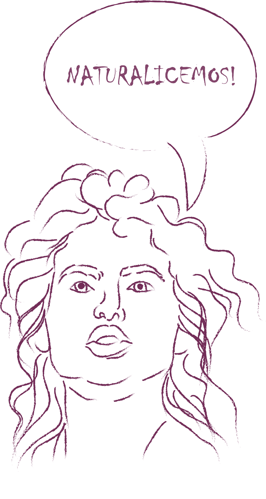

Somos el producto de 5000 millones de años de evolución biológica lenta y fortuita...
somos animales
en un periodo de transición
Texto extraído y editado del libro la Conexión Cósmica
de Carl Sagan (1973)
, hemos evolucionado e involucionado en cúspides
de gloria y declives, glorias alcanzadas por el auge espiritual que nos conectó con lo esencial,
viviendo por, para y con la madre tierra... y declives embanderados por el ego que nos llevó a
desperdiciar, acumular, desvalorizar y sentir que la evolución
está en tener y no en ser.

A lo largo del recorrido 'humano' hemos creado objetos a conciencia y objetos cuya finalidad consiste en saciar el hambre de un
sistema de consumo que agoniza por obtener más, las economías que "sostienen" el mundo están basadas en la explotación de la tierra
para extracción de petróleo, la producción textil y la industria "alimenticia",
producimos más de 2100 millones de toneladas de "basura" cada año
y según la ONU, cada día, 2 millones de toneladas de aguas residuales desembocan en las aguas del mundo,
nuestra huella maltrata y destruye vidas, estamos desangrando nuestra principal fuente de energía.

Ha llegado el momento de reflexionar sobre las consecuencias de nuestros actos, de sentir respeto por todos los seres que nos rodean, de construir desde lo que en realidad necesitamos y desde lo que tenemos, sacando el máximo provecho de materiales, herramientas, métodos, algoritmos y tecnologías que ya hemos creado, de tener la sensatez de involucrar en nuestro flujo de creación y reparación a la naturaleza, sin maltratarla, aprendiendo de su infinitud y reconstruyendo nuestra relación con el ambiente. Ha llegado el momento de naturalizar. Texto extraído y editado del capítulo dedicado a Neri Oxman en Abstrac 
Naturalizar, desde la ciencia que convierte la información en conocimiento, desde la tecnología que nos facilita el proceso de datos y maquinización, desde el diseño que busca soluciones a necesidades a partir del conocimiento del contexto cultural y desde el arte que nos permite cuestionarnos nuestra percepción del mundo, esta naturalización de la creación, transformación o reconstrucción es lo que se conoce como:
BIODISEÑO
Por lo tanto, el biodiseño puede estar presente en todas las areas del conocimiento, que
se inspiren en la naturaleza (bioinspiración), para crear un objeto/tecnología o servicio, o bien solucionar
algún problema ya existente, y como cualquier conocimiento humano puede usar su potencial para mutar
positivamente proponiendo y efectuando cambios ambientales, economías circulares y pensamientos de conciencia para
aprender y replicar sin dañar la alquimia de la madre tierra.
Así mismo en las mentes equivocadas puede seguir simplemente contribuyendo a la materialización sin sentido
y la destrucción del hogar que nos da la vida.

Desde siempre el ser humano se ha bioinspirado, pero una de las primeras ciencias que adoptó oficialmente este concepto surge en 1968, cuando Otto H. Schmitt acuño el término Biomimética, palabra que se deriva de Bios, que significa vida, y mimesis, que significa imitar, para explicar, la ingeniería que nació, estaba por nacer y aún nace, a causa de las conclusiones extraídas a partir de la observación y comprensión de métodos, procesos y diseños de la naturaleza. Esta comprensión e inspiración ha logrado el desarrollo y fabricación de nuevos materiales, estructuras, algoritmos, e infinidad de nuevos sistemas, la siguiente cita es un fragmento de un paper llamado Multifunctional Materials que si bien se enfoca en materiales, siento que describe el papel de intersección entre ciencia, diseño y naturaleza en el constante desarrollo no solo de materiales sino en general de cualquier objeto bioinspirado:
Los materiales pueden diseñarse para tener funcionalidades eléctricas, magnéticas, ópticas, locomotoras, generadoras de energía integradas y posiblemente otras que trabajen en sinergia para proporcionar ventajas que van más allá de la suma de las capacidades individuales. Los materiales de este tipo tienen un enorme potencial para afectar el rendimiento estructural futuro al reducir el tamaño, el peso, el costo, el consumo de energía y la complejidad, al tiempo que mejoran la eficiencia, la seguridad y la versatilidad. La naturaleza ofrece numerosos ejemplos de materiales que cumplen múltiples funciones. Los materiales biológicos contienen habitualmente funciones de detección, curación, activación y otras integradas en las estructuras primarias de un organismo. La piel humana, consta de muchas capas de células, cada una de las cuales contiene glándulas sebáceas y sudoríparas, receptores sensoriales, folículos pilosos, vasos sanguíneos y otros componentes con funciones distintas que proporcionan la estructura básica y la protección para los órganos internos. Estas estructuras han evolucionado en la naturaleza durante eones hasta el nivel de perfecta integración y perfección con las que cumplen sus funciones. Los científicos ahora buscan imitar estos sistemas de materiales en el diseño de materiales sintéticos multifuncionales utilizando la física, la química y las matemáticas en su beneficio para competir con el marco de tiempo ilimitado del proceso de diseño evolutivo de la naturaleza.
Esto nos lleva a comprender que el proceso esencial de inspirarnos en lo natural, está en discernir cómo ese fragmento de naturaleza observado, es una unidad compuesta, entendiendo su piel/materia, su forma y comportamiento. En el momento en el que comprendemos el modo de operar de la naturaleza nos damos cuenta de la importancia del tránsito que debemos realizar de objetos fabricados a partes a el diseño y construcción de objetos como unidad
Al menos desde la Revolución Industrial, el mundo del diseño ha sido dominado por rigores de la fabricación y producción en masa. Las líneas de montaje han dictado un mundo hecho de partes, encorsetando la imaginación de diseñadores y arquitectos entrenados para pensar sus objetos como ensamblajes de partes discretas con funciones distintas. Pero uno no encuentra ensamblajes de material homogéneo en la naturaleza....
Ahora, está bien inspirarnos en lo natural para la fabricación de nuevos materiales, sistemas u objetos, pero es de vital importancia ser conscientes de los recursos de los que disponemos y usar sabiamente la naturaleza, para mi, es aquí donde radica la diferencia, entre un biodiseñador y un diseñador, entre un bioarquitecto o un arquitecto, entre un bioingeniero o un ingeniero, etc; el biodiseño se trata de crear o pensar soluciones que no solo esten inspiradas en la naturaleza, si no que cuiden de ella, o la mejoren; papel que se puede entender con el proceso de Biofabricación donde la principal finalidad está en crear materiales que se biodegradan, los llamados, biomateriales.
Luego de una colaboración reveladora con un biólogo.. que me dio a conocer un nuevo mundo de posibilidades sobre cómo podemos diseñar y crear cosas. Descubrí una propuesta radical de fabricación, la Biofabricación, literalmente, ¡Fabricar con biología!.. ¿Que significa eso?, Bueno, en vez de tratar plantas, animales o petróleo, para crear productos de consumo, podemos cultivar materiales directamente con organismos vivos.. Es lo que muchos llaman la cuarta revolución industrial...
Suzanne Comenzó con un proyecto llamado "BioCouture", donde en vez de cultivar plantas como el algodón, cultivó bacterias con un líquido rico en nutrientes, en el cual se fermentaron hilos de celulosa que se auto organizaron y crearon un trozo de tela, Suzan la secó, la cortó y la cosío creando varias prendas, zapatos y carteras.
Actualmente BioCouture se ha dedicado a investigar y generar nuevos textiles a base de té verde, azúcar y kombucha; este, sin lugar a dudas, es un escenario en el que podemos soñar con que la industria textil tal como la conocemos hoy, con su huella tóxica en el planeta, se pueda transformar a un proceso menos dañino y más consciente con el ambiente.
Sin embargo, paralelo a la biofabricación, ¡debemos plantear alternativas solarPunk en diseño!, donde pensemos estrategias para el uso indicado de materiales ya existentes y repensar el uso y des-uso de los objetos, diseñar educación para concientización de las formas en las que producimos basura, mientras cae la industria como la conocemos hoy por un nuevo modo de fabricación, debemos trabajar, en entender, que la basura, no existe, y pensar la forma en la que podemos dejar de producir elementos de único uso, como ya está pasando con los pitillos y las bolsas plásticas.
Existen otros proyectos que logran expandir esta mirada de biofabricación hacia el plano de la arquitectura, algunos como Root Bridges nos invitan a reconfigurar esta mirada egocentrista de "adaptar la naturaleza a nuestro entorno" hacia "adaptarnos en la naturaleza", ó Patrones de crecimiento que nos amplían el cambio de visión y nos hace repensar las formas en las que podemos construir el mundo, y Pieles de construcción biomiméticas que nos plantea la idea de desarrollar mecánicas autosostenibles, entre muchos más.
Por otro lado, también existen investigaciones de inteligencia artificial inspiradas en la naturaleza, como las de Toshiyuki Nakagaki y su equipo, que nos muestra cómo se pueden crear nuevos algoritmos para mejorar sistemas humanos no tangibles a partir de la observación adecuada de organismos vivos, en este caso un algoritmo capaz de "aprender" del mismo modo que lo hace un organismo unicelular llamado physarum polycephalum, con el fin de compararlo con el modelo actual de la red ferroviaria de Tokio, y lograr un modelo óptimo para mejorarlo.
Es importante mencionar que proyectos de biofabricación, de bioinformática, o que involucran el uso de organismos vivos o parte de ellos para el beneficio del ser humano son en sí mismos hijos de la Biotecnología que es, tal vez, de las ciencias inherentes de la humanidad, dada la curiosidad de experimentar y usar otros seres vivos para crear o transformar, de ahí el origen de la fermentación, del pan o del queso.
Voy finalizando, con lo que es para mi, la más controversial de las aplicaciones biotecnológicas, la Biología sintética, o BioHacking, la creación de vida artificial, el diseño de organismos para beneficio del ser humano... Aquí existen proyectos increíbles que buscan nuevas formas de vida microscópica para construcciones biodegradables, detección de enfermedades, diseño de posibles soluciones ambientales, o impresión en canales 3D para controlar el flujo de cultivos bacterianos líquidos como Musthari que busca la posibilidad de crear ropa para mantener la vida en viajes interplanetarios, entre otros.
Imaginense una planta, que como todas las plantas, capta energía del sol durante el día, pero a la noche ilumina... Imaginense un banco de sangre para transfusiones de emergencia, pero de sangre artificial y que de chapa no contagie enfermedades... Imaginense un organismo capaz de capturar el dióxido de carbono (el del efecto invernadero), sacándolo de la atmósfera, pero no solo eso, si no que además lo convierte en una forma útil de energía... No sueñen más, bienvenidos a la biología sintética
Hasta aquí todo lo que nombre, me parece fascinante, un modo de hacernos y hacer mejor la naturaleza, quizás si se lleva bien el rumbo de la biotecnología, se pueda algún día dejar de llevar una vida tan acelerada y competitiva como la de hoy, donde la finalidad es producir y producir... quizás algún día, esto permita que el ser humano de repente entienda que lo primero y más importante para transformar es el diseño de su propia construcción interna.
Y cierro con la otra cara de la biología sintética, la del hacking del ADN Recomendación: ver Selección Antinatural, serie disponible en Netflix , y la transformación de cuerpos desde la visión evolutiva del ser humano, la verdad es que estoy en total contra de la alteración genética en animales para que sean más veloces, más fuertes, más bonitos, o más "inteligentes", estoy en total contra en el momento en donde el uso de la Biología sintética pasa de la creación de nuevos microorganismos para control o detección de tóxicos ambientales, para limpiar aguas residuales, para curar el cáncer o enfermedades desde la medicina convencional, para mejorar sistemas de transporte y usos de este tipo, a la manipulación de cuerpos para diseñarlos desde la visión "evolutiva" de los humanos, ¿acaso, no es esto, una forma de selección sin campos de concentración?. Ahora, solo queda esperar que depara esta nueva "evolución" sintética, en este continuo periodo de transición.
Inspiración, cátedra de BioDiseño, por Heidi Jalkh.
Gracias por leer, Camila Achuri